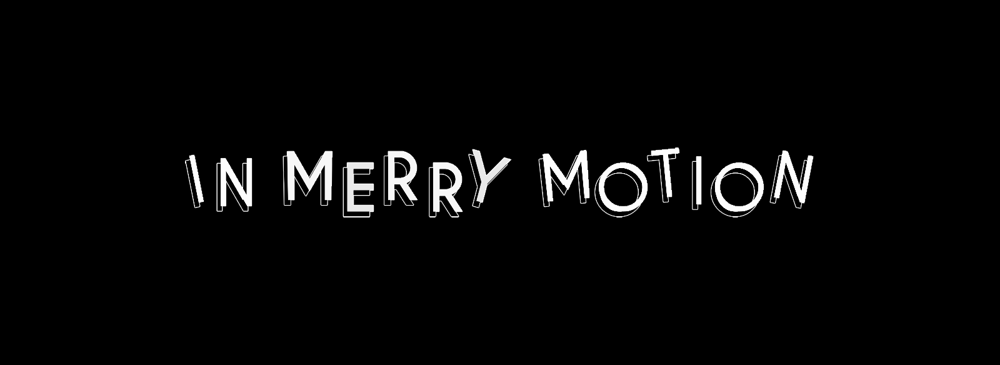
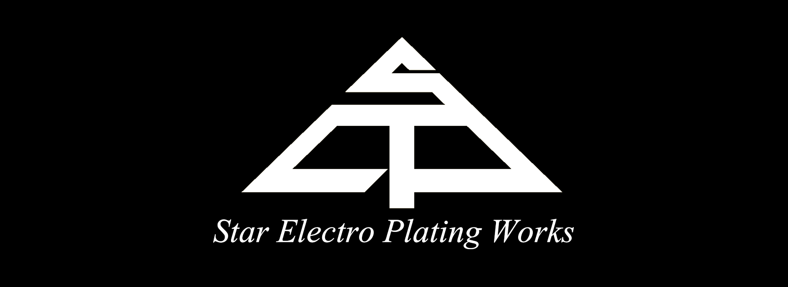

WILLIE TAY
"less is more; doing more with less"

Industrial Designer
I am a Designer, Maker, and an Educator;
A Designer who embraced minimalism and possesses a mastery of form aesthetics, the technical aspect of design detailing, and prototyping.
A Maker who is skilled in hacking and building objects by utilizing conventional prototyping techniques and advanced digital fabrication systems.
An Educator who is experienced in teaching design fundamentals and skill-set, transferring integral knowledge to students so as to equip them with the capacity and aptitude for design and prototyping.
I was trained as an Industrial Designer since 2006 and have been in practice for more than 15 years. I am also a Digital Design & Fabrication Specialist that specialized in Additive Manufacturing as well as 3D Modeling. I have acquired a series of multi-disciplinary expertise in various fields of design and have worked with various partners and contractors in providing design solutions and final design production ranging from furniture, automotive, exhibition, consumer products, jewelry, UX, medical to visual merchandising. I am fortunate to have pick up a number of renowned design awards and patents and have also established a wide network of notable contacts, ranging from metal fabricators, wood carpenters, stone & marble suppliers, 3D printing vendors to electroplating & spraying painting finishing companies.
Skills
Creativity
Technical Know-How
Problem-Solving
Partners
Projects Done
Clients
Enquiries
Skill-Set
- Hard-Skill Proficiencies
- Product Ideation
- Product Prototyping
- Product Finishing | C . M . F
- 3D CAD/CAM Modeling
- 3D Visualization Rendering
- 2D Visual Com. & Illustration
- Software Proficiencies
- Microsoft Office 365
- Artec Studio | Materialise Magics
- Rhino 3D
- Autodesk | Fusion 360 . FeatureCAM
- Keyshot | V-Ray
- Adobe CC | Ai . Ps . Id . Dw
Clientele
 
My Works | Assignments

Principle & Practices | Week 1
This week I worked on defining my final project idea and started to getting used to the documentation process.

Project Management | Week 2
This week I worked on defining my final project idea and started to getting used to the documentation process.

Computer Aided Design | Week 3
This week I worked on defining my final project idea and started to getting used to the documentation process.
Computer Controlled Cutting | Week 4
This week I worked on defining my final project idea and started to getting used to the documentation process.
Electronics Production | Week 5
This week I worked on defining my final project idea and started to getting used to the documentation process.
3D Scanning & Printing | Week 6
This week I worked on defining my final project idea and started to getting used to the documentation process.
Electronic Design Design | Week 7
This week I worked on defining my final project idea and started to getting used to the documentation process.
Computer Controlled Machining | Week 8
This week I worked on defining my final project idea and started to getting used to the documentation process.
Embedded Programming | Week 9
This week I worked on defining my final project idea and started to getting used to the documentation process.
Molding & Casting | Week 10
This week I worked on defining my final project idea and started to getting used to the documentation process.
Input Devices | Week 11
This week I worked on defining my final project idea and started to getting used to the documentation process.
Output Devices | Week 12
This week I worked on defining my final project idea and started to getting used to the documentation process.
Applications & Implications | Week 13
This week I worked on defining my final project idea and started to getting used to the documentation process.
Networking & Communication | Week 14
This week I worked on defining my final project idea and started to getting used to the documentation process.
Mechanical Design | Week 15
This week I worked on defining my final project idea and started to getting used to the documentation process.
Interface & Application Programming | Week 16
This week I worked on defining my final project idea and started to getting used to the documentation process.
Machine Design | Week 17
This week I worked on defining my final project idea and started to getting used to the documentation process.
Wildcard | Week 18
This week I worked on defining my final project idea and started to getting used to the documentation process.
Invention, Intellectual Property & Income | Week 19
This week I worked on defining my final project idea and started to getting used to the documentation process.
Project Development | Week 20
This week I worked on defining my final project idea and started to getting used to the documentation process.
Contact Me
Singapore
+65 9277 1445
Wilz.Dezign.Willie@gmail.com